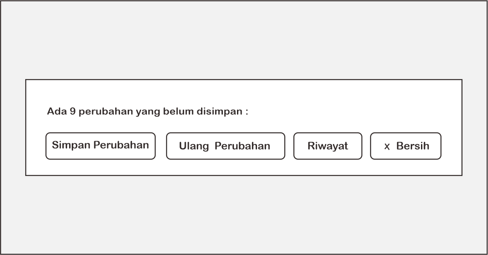
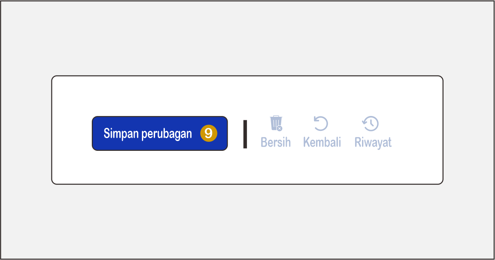

Pelajari teknologi UI UX Design yang menggabungkan dunia nyata dan digital.
UI / UX Design
Pelajari prinsip desain antarmuka (UI) dan pengalaman pengguna (UX) untuk menciptakan aplikasi yang menarik,
intuitif, dan mudah digunakan.
Grow The Future with Code bersama kami!
Contoh Before - After UI Sederhana


Geser slider di tengah untuk melihat perbandingan tampilan sebelum dan sesudah perbaikan UI.
Konsistensi
Desain yang konsisten membantu pengguna lebih cepat memahami tampilan dan fungsi aplikasi. Saat elemen-elemen
antarmuka terlihat seragam, pengguna akan merasa lebih familiar dan percaya diri dalam menjelajah..
Kesederhanaan
Dengan menyederhanakan tampilan dan navigasi, pengguna dapat fokus pada tujuan utama mereka tanpa terganggu
oleh informasi atau fitur yang berlebihan. Kesederhanaan menciptakan pengalaman yang efisien dan menyenangkan..
Responsif
Desain responsif memastikan aplikasi tetap nyaman digunakan di berbagai perangkat, dari smartphone hingga
desktop. Hal ini penting agar semua pengguna mendapatkan pengalaman yang optimal, kapan pun dan di mana pun
mereka mengaksesnya..